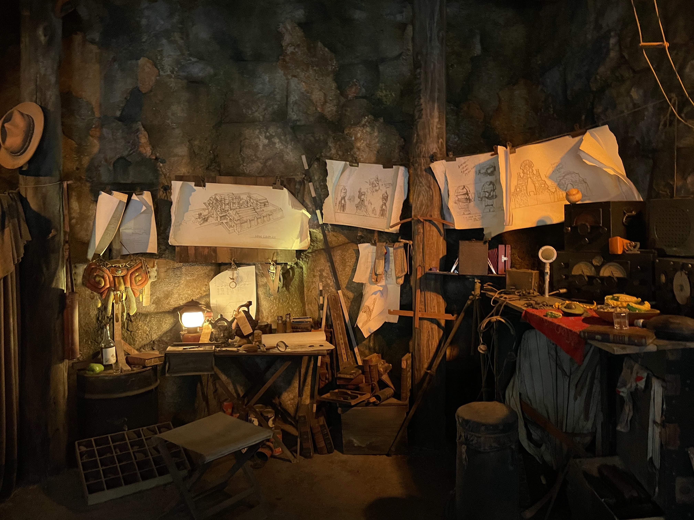
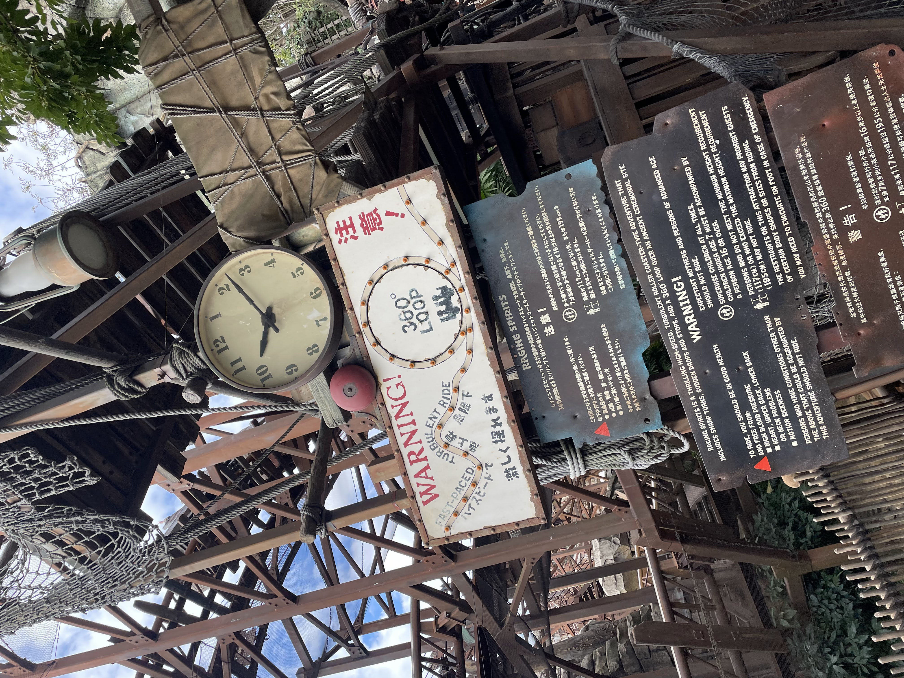

Raging Spirits

I. 放置された発掘調査キャンプ
中央アメリカの失われた河のほとり「ロストリバーデルタ」。うっそうと生い茂るジャングルの最奥に、突如として現れる崩壊した古代遺跡の発掘現場、それこそが「レイジングスピリッツ」の舞台です。
アトラクションのキューライン（待ち列）を進むと、ゲストは**「放置された考古学者たちの発掘調査キャンプ」**を通過します。そこには、ランタンのほの暗い灯りに照らされたテーブルの上に、未完成の遺跡のスケッチ、無線機、そして調査日記が、まるで「つい数分前まで誰かがここにいた」かのような臨場感で遺されています。なぜ、学者たちは命よりも大切な発掘機材をすべて放り出して、この地から一瞬にして逃げ去ってしまったのでしょうか。
II. 水の上に燃え盛る「神々の怒り」
かつてこの地に暮らした古代の人々は、二体の偉大な神、**水の神「アクアトナ」**と、**火の神「イクリトア」**を祀るための神殿を建設しました。彼らは世界の調和を保つため、この二体の神像を**「背中合わせ」**に配置し、決して互いが出会わないように細心の注意を払っていました。

しかし、後世にやってきた無知で強欲な考古学者たちが、遺跡を調査する過程で「神像を向かい合わせにする」という、最大の禁忌を犯してしまったのです。水の神アクアトナと、火の神イクリトアの視線が交差した瞬間、神殿は大爆発を起こし、神々の怒りが大爆発しました。
写真に捉えられている通り、神殿の階段から流れ落ちる**「水の上で、本物の火炎が赤々と燃え盛る」**という、自然界の理を完全に覆す怪奇現象が発生しました。水は激しく沸き立ち、炎は水面を這い回り、現在もこの不可思議な超自然現象が絶え間なく続いています。この神々の怒りの炎を目撃した調査隊は恐怖の奥底に陥り、キャンプを捨ててジャングルへと逃げ去ってしまったのです。
III. 捻じ曲げられた仮設足場と360度ループ
ゲストが乗り込むことになるのは、かつて遺跡の修復や発掘物資を運ぶために、急ごしらえの仮設足場の上に引かれたレールを走る鉱山列車（ホッパーカー）です。しかし、神々の激怒による凄まじい地鳴りとエネルギーは、頑丈なはずの鉄鋼のレールの足場を一瞬にして「グニャリ」と捻じ曲げてしまいました。

その結果、**仮設の線路に「1回転（360度垂直ループ）」という、恐るべき超常現象の形が刻み込まれてしまった**のです。現在、誰も運転士がいないはずのホッパーカーは、神々の怒りの渦中へ、そして重力を無視して逆さまに回転する垂直ループへと、凄まじいスピードで今もなお走り続けています。私たちは、この呪われた暴走列車に乗り込む、命知らずな体験ツアーの参加者なのです。
IV. ロストリバーに遺された「略奪王」の痕跡
このレイジングスピリッツの発掘現場、実は、あの『タワー・オブ・テラー』の主人公であり、S.E.A.のメンバーでもあった大富豪**「ハリソン・ハイタワー三世」**と極めて深い繋がりがあります。
ハイタワー三世は、この遺跡の存在を知り、自らの莫大な資金力を使ってこの発掘現場を実質的に「買収」し、略奪品の輸送ネットワークを敷いていました。レイジングスピリッツの発掘現場を注意深く見ると、積み残されて放置された木箱の中に、はっきりと**「HOTEL HIGHTOWER（ホテル・ハイタワー行き）」**の文字が刻まれた木箱を発見することができます。
🔎 インディ・ジョーンズ博士との対比
すぐ隣にある「クリスタルスカルの魔宮」を探検しているインディ・ジョーンズ博士は、「歴史を守り、現地の文化や神聖なルールに最大の敬意を払いながら学術的に調査する」という**「本物の考古学者」**です。一方で、ハイタワー三世は「歴史を略奪し、自分の富を誇示する」という**「強欲な略奪者」**でした。
同じロストリバーデルタに遺されたふたつの発掘現場は、**「歴史への敬意（インディ）」**と、**「歴史への冒涜（ハイタワー三世）」**という、ディズニーシー全体の光と影のメッセージとして描かれているのです。ハイタワーが犯した数々の略奪の罰は、のちに1899年のニューヨークで「シリキ・ウトゥンドゥ」の手によって下されることになります。
➔ 【関連調査資料】略奪者ハイタワー三世の最期。ホテル・ハイタワーの惨劇はこちら
➔ 【関連調査資料】インディ・ジョーンズ博士の魔宮探険記はこちら